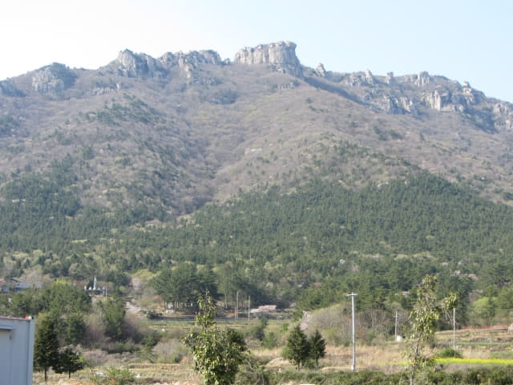
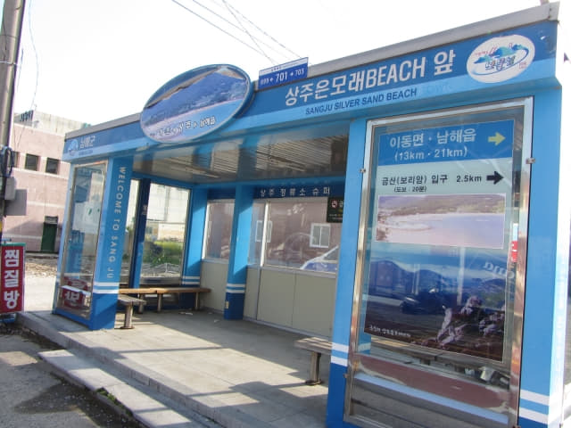

遊覽完錦山菩提庵, 循原路返回南海錦山菩提庵登山口, 打算在入口旁的餐廳吃「午餐」, 怎料沒有開門營業, 也倒是, 半個遊客也沒有! 看看手錶, 原來已經是下午三時四十分, 沒辦法, 唯有「紮砲」!其實也算了吧! 反正已經過了午餐時間, 唯有早些晚餐。接著的行程是從南海錦山菩提庵登山口步行往下一個目的地 — 尚州銀沙海灘 (상주은모래비치 Sangju Silver Sand Beach)。
南海錦山菩提庵登山口步行往尚州銀沙海灘
望望地圖, 尚州銀沙海灘離南海錦山菩提庵登山口頗遠的, 慢慢走, 估計約一小時吧! 不過路線十分簡單, 循今早走過的村莊小路返回「신보탄」巴士站, 接著沿馬路一直走便是, 不可能走錯路的。
Okay! 已經是下午三時四十五分, 快些出發啦! 估計到達尚州銀沙海灘時差不多下午五時, 沒什麼時間遊覽的了!
離開南海錦山菩提庵登山口, 沿馬路往下走。

村莊小路
接著在前面的彎道轉左沿村莊小路走。想起村莊中有很多惡犬, 便在路旁執起一枝樹枝防範。
轉身抬頭望望錦山山頂的巨岩, 其實很遠很高的, 但又給我們征服了, 真是十分滿足!

巨岩下的菩提庵, 剛才在山頂時有一隊軍人剛剛開始佈置, 當時只掛起幾個燈籠, 現在已張燈結綵, 十分漂亮, 軍人的效率真高!
沿村莊小路一直走, 沿途都是狗吠聲, 幸好所有汪汪都是在屋的門內。
「신보탄」巴士站
很快便走出村莊小路, 來到一條寬闊的馬路, 我們今早便是在路口的「신보탄」巴士站下車的。
南海之路 (남해대로)
在路口轉左沿馬路 (南海之路)走。沿途都是燦爛櫻花, 十分漂亮, 只是這旅程看了很多很多櫻花, 好像已經沒有什麼反應了!
粉紅色的櫻花和黃澄澄的油菜花, 互相輝映, 還有悠閒的村莊, 真是很美! 如果是旅程剛剛開始時, 看到這景色, 肯定雀躍不已!


一直向前走, 好像沒有盡頭的海南櫻花道。
經過「금양」巴士站。望望地圖, 已經走了大半的路程, 目的地尚州銀沙海灘在望了。

繼續向前走, 馬路對面的村莊中有一間寺廟 — 天然寺 (천연사)。
來玩玩鏡中人。
經過南海尚州小學 (남해상주초등학교)。
尚州銀沙海灘 (상주은모래비치 Sangju Silver Sand Beach)
再往前走一會, 來到一個巴士站, 望望站名, 原來是「Sangju Silver Sand Beach」, 來到尚州銀沙海灘了!


{kind=link}